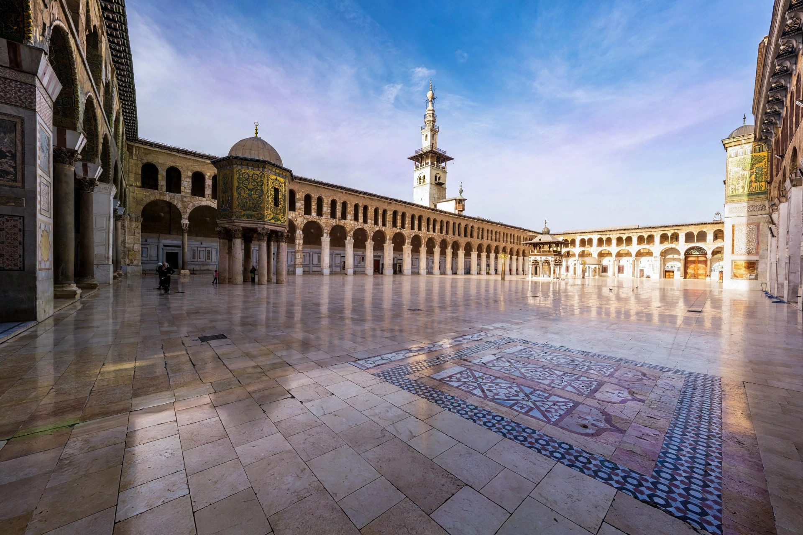

The Umayyad Mosque, also known as the Great Mosque of Damascus, is one of the largest and oldest mosques in the world, located in the old city of Damascus, Syria. Built between 705 and 715 CE by the Umayyad caliph al-Walid I on the site of a Roman temple of Jupiter and a Byzantine cathedral dedicated to John the Baptist, it is revered by Muslims as one of the holiest places in Islam and contains a shrine believed to hold the head of John the Baptist (Yahya), venerated by both Muslims and Christians.
| Umayyad Mosque | |
|---|---|
 Courtyard of the Umayyad Mosque | |
| Location | Old City of Damascus, Syria |
| Built | 705–715 CE |
| Commissioned by | Caliph al-Walid I |
| Style | Umayyad |
| Minarets | 3 (incl. Minaret of Jesus) |
The mosque occupies a rectangle of about 157 by 100 metres within the Roman temenos walls. Worshippers enter a vast marble courtyard surrounded by arcades; the Dome of the Treasury, an octagonal pavilion on columns, stands in the courtyard. The prayer hall, divided by rows of Corinthian columns into three aisles, was once covered with golden mosaics depicting lush landscapes and palaces — among the masterpieces of early Islamic art, largely created by Byzantine craftsmen. The mosque's three minarets include the Minaret of the Bride and the south-eastern Minaret of Jesus (Isa), from which, in Islamic eschatology, Jesus will descend at the end of time.
The site has been sacred for three millennia: an Aramaean temple of Hadad and a Roman temple of Jupiter preceded the Christian basilica. After the Muslim conquest of Damascus in 634 the building was shared for a time before al-Walid expropriated it for the mosque. The building suffered fires (notably in 1069 and 1893), Timur's sack of 1400, and earthquake damage, but was repeatedly restored. Adjacent stands the mausoleum of Saladin, buried nearby in 1193. The mosque remains a living place of worship and a symbol of Damascus.